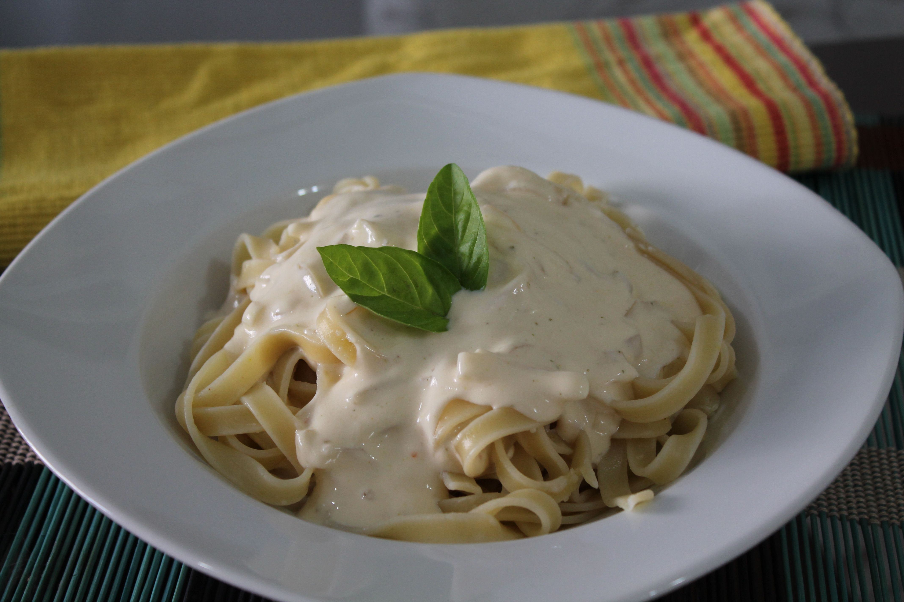

Macarrão ao Molho Branco

Essa receita de molho branco é muito fácil, indicada para você que ainda está
começando a se aventurar no mundo da cozinha. A gente sabe que é sempre mais fácil comprar o
molho pronto, mas nada mais gostoso do que preparar uma comidinha caseira, não é mesmo?
Igredientes
- 1 cebola pequena picada
- 1 colher de margarina
- 1 caixa de creme de leite
- 1/2 litro de leite
- 1 colher (sopa) de amido de milho
- 1 xícara de queijo ralado
- pimenta-do-reino a gosto
- 1 colher (sobremesa) de sal
Preparo
- Em uma panela, derreta a margarina e acrescente a cebola, o sal e a pimenta-do-reino.
- Quando a cebola estiver bem transparente, acrescente o creme de leite e misture.
- Dissolva o amido no leite e adicione ao molho.
- Quando o molho estiver com uma consistência firme, desligue o fogo e acrescente o queijo, mexendo bem, para ele não grudar.
- Sirva com macarrão ou arroz de forno.